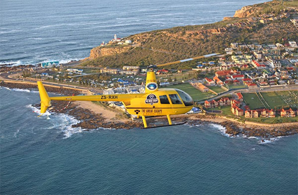
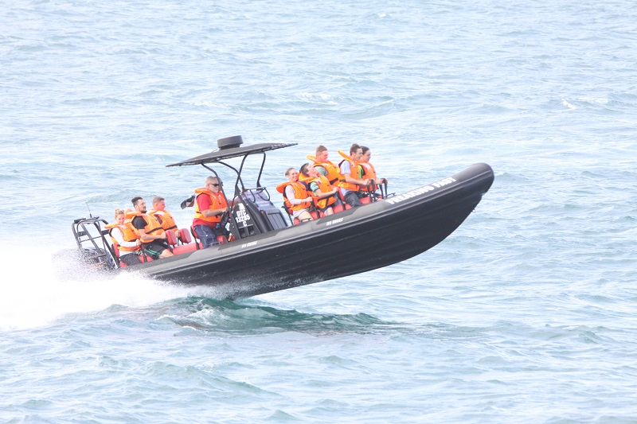

Mossel Bay is a harbour town on the Garden
Route in South Africa’s Western Cape Province.
It’s known for the wide Santos Beach and the
19th-century Cape St. Blaize Lighthouse,
which offers bay views. The Bartolomeu Dias
Museum Complex includes the Maritime Museum,
the Shell Museum and botanical gardens.
The Post Office Tree, a milkwood tree in
the complex, has been used as a mail collection
point since the 1500s.
 